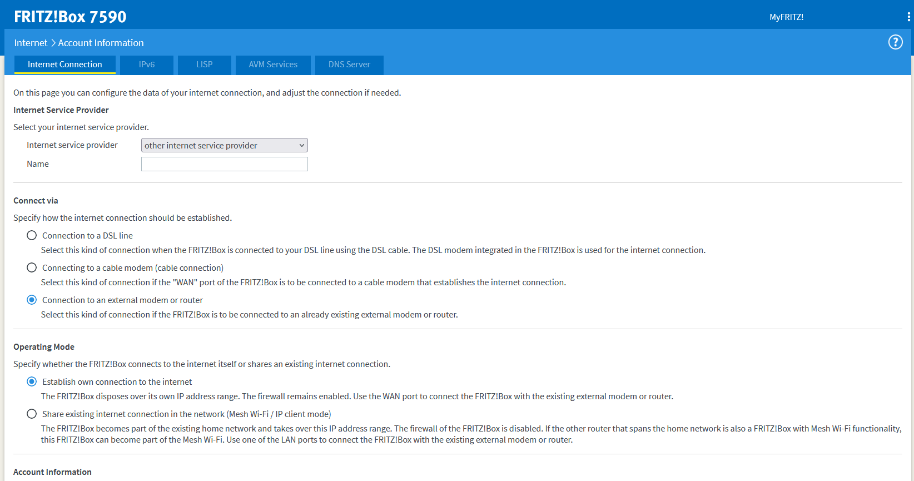
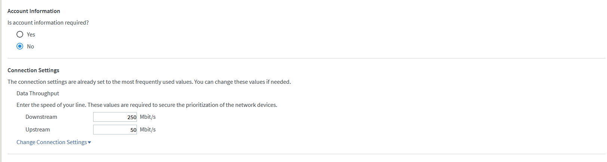

hey,
ich würde gerne eine Fritzbox 7590 als mein Hauptgerät benutzen, und meine Connectbox in den Bridge-Modus versetzen.
Doch egal wie ich die Fritzbox einstelle, bekomme ich im Modem-Modus von der Connectbox keine Verbindung. Angehängt sind meine aktuellen Einstellungen, in der Connectbox ist der Bridge-Modus derzeit deaktiviert (Router-Modus).
Welche Einstellungen muss ich hier für die Fritzbox auswählen, und wie muss ich sie an die Connect-Box anschließen, damit der Bridge-Mode richtig funktioniert?


Die Einstellungen sehen gut aus.
Trenne alle Geräte von der connectbox, außer der FRITZ!Box. Die FRITZ!Box müsste Internet haben, dann aktivieren über die FRITZ!Box den Bridge Modus an der Connectbox.
Jetzt fühl ich mich irgendwie doof, nachdem ich hätte schwören können dass genau das bis jetzt nicht funktioniert hat. Vielleicht war ich nur zu ungeduldig, die Connect Box ist ja leider ein wenig langsam beim starten
Vielen Dank für deine Hilfe (erneut!)

Jetzt hab ich ein Modem das wirklich nur Modem ist, und eine Fritzbox über die ich Firewall, DHCP und Telefon laufen lassen kann!
Wollte die selbe Funktion und die öffentliche IP auf meiner Fritzbox weiterleiten. Allerdings hängt sich das Modem (B535) immer auf, wenn ich den Brückenmodus aktiviere, sodass danach nichts mehr funktioniert. Nur ein Reset...
Hat jemand eine Idee?
{kind=link}
{kind=link}